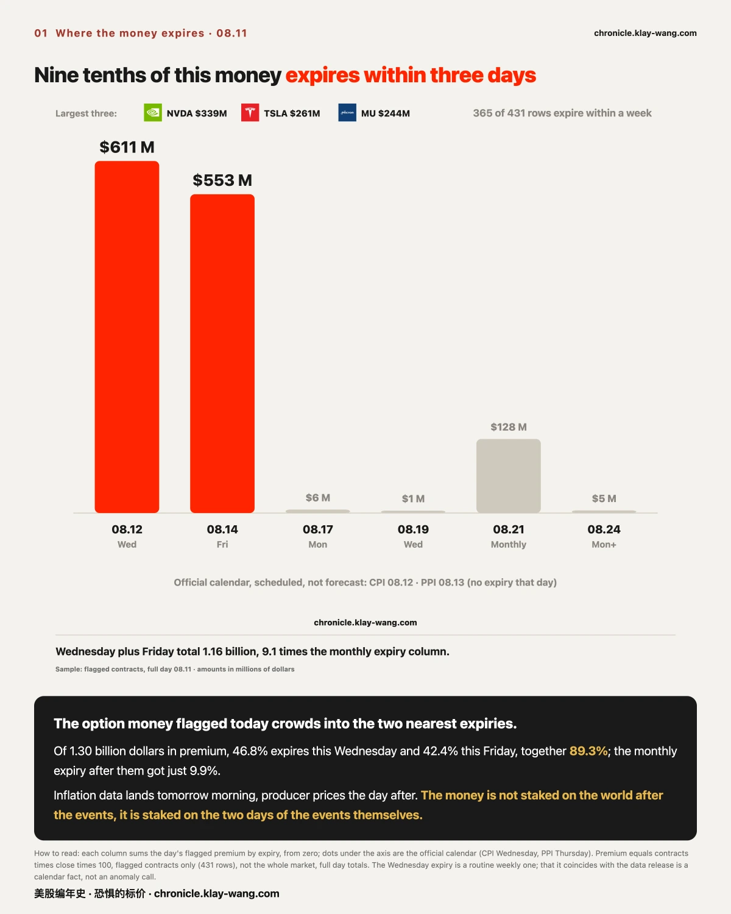
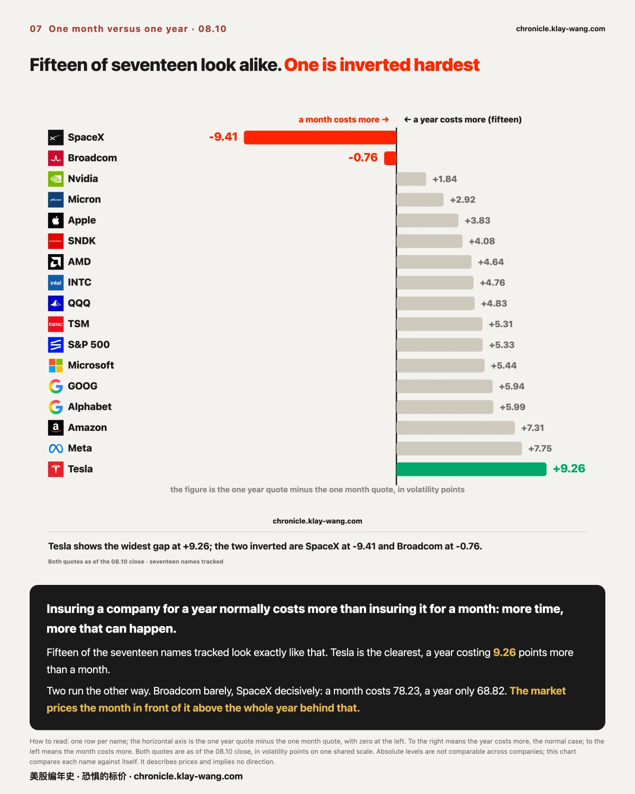
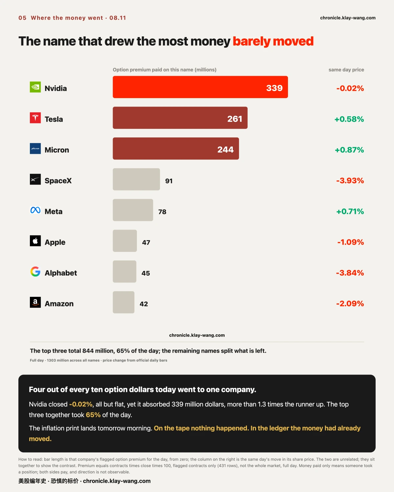
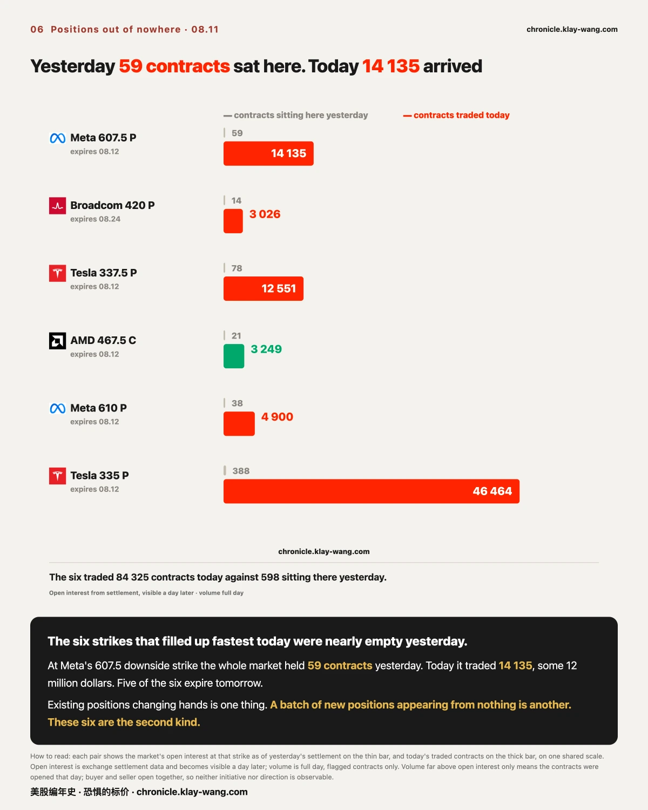
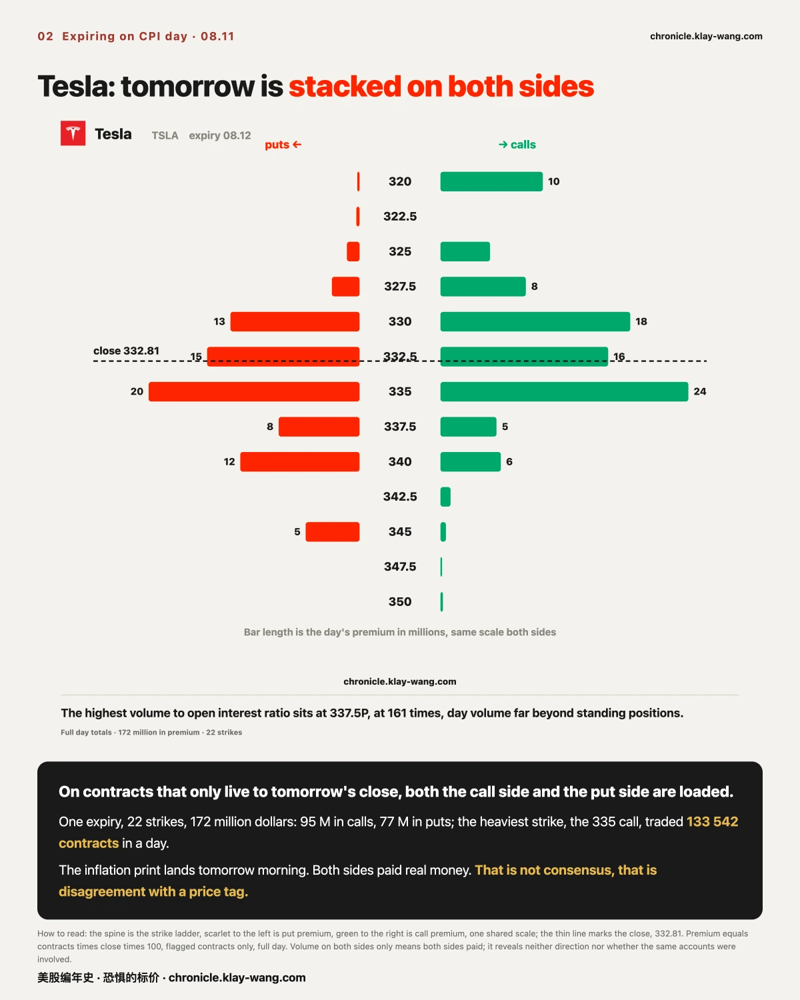
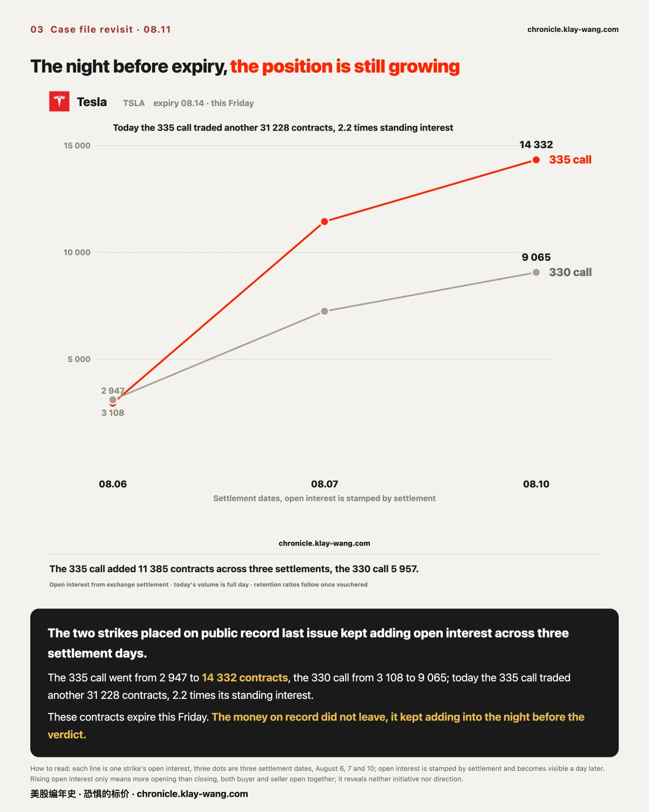
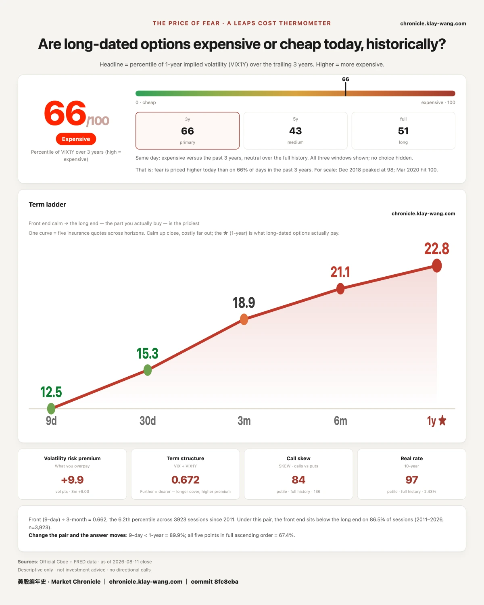

Section 1: which day the whole market's money expires on. Section 2: seventeen names side by side,
and one shape that runs the wrong way. Sections 3 to 5: three individual companies.
Section 6: the scoreboard on a position we put on public record last issue. Section 7: the daily gauge.
If you are short on time, section 1 and the last section together will tell you what kind of day this was.

This section covers one thing only: which expiry date today's option money is stacked on. Not who was buying, and not which way anything will go.
The contracts flagged today add up to 1.30 billion dollars in premium. 46.8% of it expires tomorrow,
42.4% the day after, together 89.3%. The monthly expiry beyond them received just 9.9%.
An analogy. If you saw every traveller at a station fighting for seats on tomorrow's train while the
carriages for the rest of the week sat empty, you would not need to know where they were going,
or why. You would only need to know one thing: tomorrow's train will be crowded.
Inflation data lands tomorrow at 08.30, producer prices the day after. This money is not staked on
the world after the events. It is staked on the two days of the events themselves.
One thing to say up front: tomorrow is a routine weekly expiry, so some crowding there is a calendar
fact, not news. What is worth reading is the shape inside the same pile of money: of 431 flagged
contracts, 365 do not live a week. That proportion is not something the calendar explains.
The three parts: the evidence is the expiry distribution and premium totals across 431 contracts;
the reasoning is that after allowing for the calendar, the share expiring within a week is still 85%;
what would overturn it is the 08.21 column growing materially this week once the data has landed,
which would mean the money was placed early rather than concentrated on the event days.

This section says nothing about any day's move. It covers one thing: for the same company, does protecting the next month or the next year carry the higher quote.
Start with the normal case. Protecting a company for a year usually costs more than protecting it
for a month, for a plain reason: more time, more that can happen. Fifteen of the seventeen names
tracked look exactly like that, Tesla widest of all, with a year running 9.26 points above a month.
Two run the other way. Broadcom barely. SpaceX decisively: a month quotes at 78.23, a year at 68.82.
Translated: the market prices the single month in front of it above the entire year behind that.
It is the position of someone telling you the next month will be hard, and next year less so.
⚠️ On measurement: both quotes are as of the 08.10 close, not today. Absolute levels are not
comparable across companies; this chart compares each name against itself.
The three parts: the evidence is each name's two quotes; the reasoning is that a fifteen to two split
establishes what normal looks like, so the exceptions are what need explaining; what would overturn it
is the SpaceX shape falling back below its one year quote once the 08.21 batch expires, which would
mean it was held up by that batch rather than by any view on the coming month.

This section covers the distribution of money, not which company is better and not what will rise.
Four out of every ten option dollars today went to one company: Nvidia, 339 million, more than
1.3 times the runner up. The top three, Nvidia, Tesla and Micron, took 65% of the day between them.
The interesting part is that name's own price: it closed 0.02% for the day, all but flat,
the quietest name on the board.
It is a shop with nobody queueing outside. Walk past and you would call it a slow day.
The order printer in the kitchen has not stopped. On the tape nothing happened.
In the ledger the money had already moved.
To be clear: money paid only means someone took a position. Both the buying and the selling side
pay, so this figure shows no direction. It tells you one thing: the market expects something to
happen to these companies over the next two days, and is willing to pay for that expectation.

This section is about the difference between newly opened positions and existing ones changing hands. That difference matters enough to spend a section on.
Why it matters. At a given strike, if today's volume is far below the interest already standing there,
that is mostly old positions passing between holders, and the market's total exposure has not changed.
But when today's volume runs tens of times above the standing interest, only one thing can be true:
those positions did not exist yesterday. They were opened today.
The six strikes that filled up fastest today were nearly empty yesterday:
Together the six held 598 contracts yesterday and traded 84 325 today. Five of the six expire tomorrow.
An analogy. You walk past the same market every day and one stall is always empty. Today it is piled
with goods, and it closes tomorrow. You do not know who the goods are for. You do know they arrived today.
⚠️ Again: volume far above open interest only means the contracts were opened that day.
Buyer and seller open together, so neither initiative nor direction is observable.

This section covers the structure on one expiry, nothing about the company's cars or its results.
On contracts that only live to tomorrow's close, Tesla's 22 strikes carry 172 million dollars:
95 million in calls, 77 million in puts. The heaviest single strike, the 335 call, traded
133 542 contracts in a day.
In the chart, the bars run long on both sides of the closing line. That is not consensus.
That is disagreement with a price tag.
Put plainly: in the same match, as many people backed the home side as the away side,
and all of them placed the bet today, for a result that settles tomorrow.
One number worth recording alongside it: Tesla's one month quote sits at the 1.6th percentile
of its own past year, as of the 08.10 close. On 98% of the days in the past year that quote was higher.
Cheaper things tend to get used more, and today both of those were true at once.

This section is the scoreboard: on 08.07 we put two strikes on public record and said we would watch them to expiry. Tonight is the eve of that expiry.
The two were Tesla call strikes at 330 and 335 expiring this Friday. Across three settlement days:
Today the 335 call added another 31 228 contracts of volume, 2.2 times its standing interest.
The money on record did not leave. It kept adding into the night before the verdict.
Two things to report honestly today:
First, the other four strikes on record, the SpaceX batch, shrank, two of them net closed.
Same case file, half adding and half leaving. We record that as it came out, without picking the flattering half.
Second, we are withholding the retention percentages. Last issue carried an assumption pending
verification; it has since converged, but the full documentation is still being assembled.
Until the documentation is complete, the figures do not go out. The absolute changes in open
interest hold under either assumption, and those are the two lines above.
⚠️ Rising open interest only means more opening than closing. Buyer and seller open together;
neither initiative nor direction is observable.

This section covers no individual name. It is what the whole market pays for one year of uncertainty.
What the number is. There is a group of people who must quote a price every day on whether the next
year will be violent, and who lose their own money when the quote is wrong. This index measures
where that quote sits against the past three years.
The 2026.08.11 reading is 66 out of 100.
Last issue we left a question open: the number had risen two sessions running, and we asked whether
it would keep going. The answer is that it stopped. It eased from 65.9 to 65.5, a move of 0.4.
Small, but the direction changed, and last issue's line about it continuing ends here.
At the same moment, five maturities form an upward slope: 12.52 at nine days, 18.91 at three months,
21.10 at six months, 22.75 at one year. Further out, higher, which is the normal shape.
Why it matters to you: this number is not written for the people buying protection.
It is the price quoted by the people selling it. It does not tell you whether tomorrow rises or falls.
It tells you what the people who must quote a year ahead, and who pay for being wrong, quoted today.
Fear-Price Index · 2026-08-11 · reading 66/100: one year volatility VIX1Y at 22.75, the 66th percentile of the past three years, higher means dearer. Daily ledger and methodology → chronicle.klay-wang.com · Attribution: Fear-Price Index · Market Chronicle
Next issue returns to three things: whether that 89.3% of money was vindicated or wasted once the
inflation data landed; the final open interest on Tesla's Friday expiry; and whether the long end
resumes falling after this pause or turns back up.